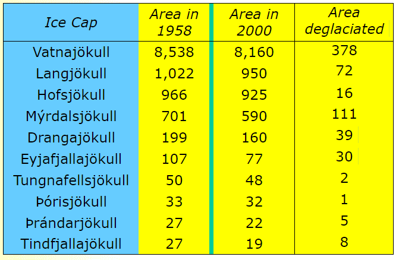

Alaska
Below is a time-lapse of the receding Columbia Glacier in Alaska.
"Over the past three decades, the terminus had retreated more than 20 kilometers (12 miles) to the north, moving past Terentiev Lake and Great Nunatak Peak. In some years, the terminus retreated more than a kilometer, though the pace has been uneven. The movement of the terminus stalled between 2000 and 2006, for example, because the Great Nunatak Peak and Kadin Peak (directly to the west) constricted the glacier’s movement and held the ice in place.
As the glacier terminus has retreated, the Columbia has thinned substantially ... Since the 1980s, the glacier has lost about half of its total thickness and volume. Rings of freshly exposed rock, known as trimlines, become especially prominent around the inlet throughout the 2000s."
-Adam Voiland, NASA
Australia/Great Barrier Reef/Coral Reefs
25% of all marine life relies on coral reefs. There are an estimated 228,450 known marine species in the ocean. A quarter of that is approximately 57,112, and even more species rely on those organisms for their own survival, including Humans. Up to a billion Humans rely on these fish for their very way of life, everywhere from their own food supply to fueling their government and economy.
93% of CO^2 emission temperature is absorbed by the ocean. If the ocean wasn’t absorbing all of this heat, the Earth’s average surface temperature would be approximately 122 degrees Fahrenheit, or 50 degrees Centigrade.
A notable reef is the Great Barrier Reef in Australia. The reef itself spans 2,000 kilometers (1,243 miles); that is approximately the length of the entire eastern coast of the United States. And the reef is dying at a rapid pace. In just 2016 alone, 29% of the Great Barrier Reef died--67% of that being the northern portion. That’s the equivalent of losing all the trees between Washington D.C. and Maine.
Coral is an animal, though it has plant cells. The plant cells absorb the sun’s rays and photosynthesize. However, it is also extremely sensitive to even the slightest temperature changes. In some parts of the world, the water is up to 8.7 degrees Fahrenheit hotter than it should be, and just 3.6 degrees Fahrenheit (2.0 degrees Centigrade) is enough to cause the corals to act out of stress and begin bleaching. Corals bleaching is a very similar process to when Humans get a fever; they begin expelling sick plant cells in an attempt to remain healthy, but eventually lose so many that they can no longer photosynthesize. By that point, they are well along their way to starving, and eventually dying.
The first known large coral bleaching was in the early 1980s. In 1998 and 1999, the first global mass bleaching occurred. In 2010, the second bleaching. And in 2015, the third one was already well on it’s way. Within the last 30 years, we have lost up to 90% of the coral in Florida. On a global scale, we have lost 50% of our world’s coral.
Aside from being vital to nature’s very way of functioning, coral has many medicinal uses that Humans are still studying. For example, the drug Prostaglandin is harvested from sea fans, and is a notable force in fighting back against Cancer.
Coral Reefs act as barriers to the ocean, breaking up large waves and protecting coastal towns and cities from cyclones and monsoons. It acts as a natural barrier better than Humanity could ever hope to imitate, and without it, weather could become much more serious and dangerous.
Beijing
Below is a time-lapse of Beijing being enveloped in a cloud of smog in just 20 minutes.
Brazil
Below is a time-lapse of deforestation occurring in Brazil over a 28 year period.
Since 1970, in the Amazon Rainforest alone, 600,000 square kilometers (230,000 square miles) of trees have been cut down. That's the equivalent of 772,203 empire state buildings, 1,158,305 Eiffel Towers, or 1,447,881 London Bridges.
Iceland
Below is an image depicting the Solheim Glacier in Iceland, and how much it has receded over a three year period.

Below is a chart depicting some of Iceland's largest glaciers, and their area in kilometers from 1958 to 2000.
